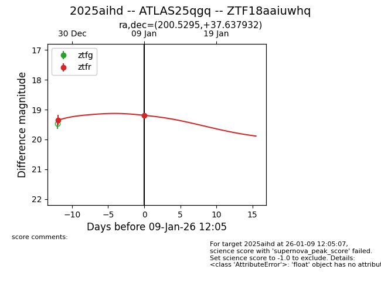
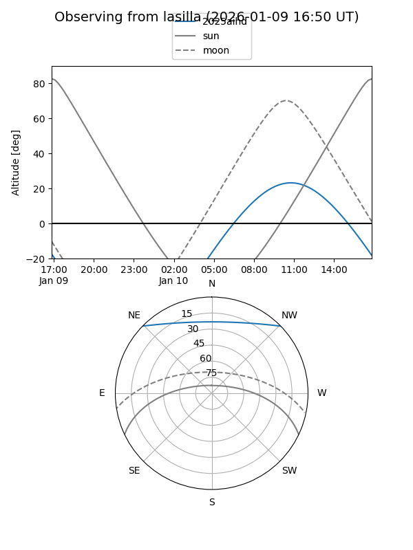
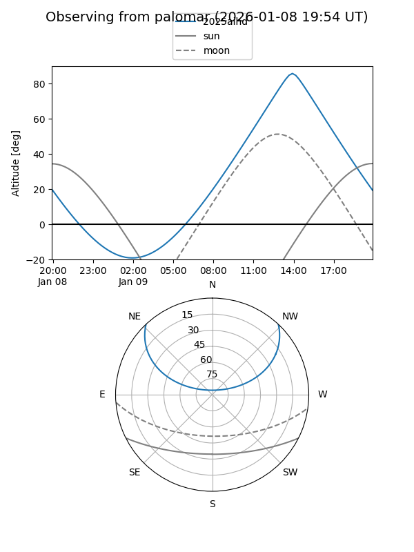
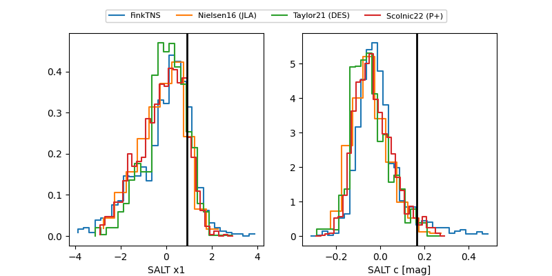

2025aihd
Target 2025aihd at 2026-01-09 12:10
Aliases and brokers:
FINK:
Lasair:
ALeRCE:
TNS:
YSE:
alt names
ZTF18aaiuwhq (ztf,fink_ztf)
2025aihd (tns,yse)
ATLAS25qgq (atlas)
Coordinates:
equatorial (ra, dec) = 200.5295,+37.63793
equatorial (HMS+DMS) = 13:22:07.07,+37:38:16.55
galactic (l, b) = (93.2767,+77.66593)
Flags:
Photometry:
last ztfr=19.19
2 ztfr detections
Lightcurve

Visibility


Additional plots
